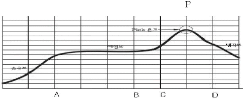

전자부품장착기능사 (2007-07-15 기출문제)
1과목: SMT 개론
1. 다음 중 스크린 프린터의 솔더 인쇄 품질과 관계 없는 것은?
- 스퀴지 속도
- 솔더 크림 정도
- 기판 재질
- 메탈 마스크 개구부 크기
(정답률: 81%)

2. 다음 중 솔볼 불량과 관계없는 것은?
- 솔더를 인쇄한 후 방치시간 과다 함
- 솔더크림 인쇄시 솔더크림의 인쇄가 무너지거나 번짐
- 솔더크림이 수분을 흡수 했을 때
- 유효기간 이내의 솔더크림을 5~10℃로 냉장보관 했을 때
(정답률: 85%)
3. 칩 부품을 장착할 때 장착 높이가 너무 높았을 때 발생하는 문제점은?
- 칩 부품에 솔더 크림이 눌려 브릿지 불량이 생긴다.
- 장착부품이 틀어지거나 이탈, 솔더볼, 쇼트 등의 불량이 나타난다.
- 솔더크림이 산화되어 불량이 발생한다.
- 온도가 올라가 부품 특성 불량이 생긴다.
(정답률: 82%)
4. 다음 그림과 같은 이상적 온도 profile 중 C-D 구간 내 p점의 온도 관리를 중 알맞은 것은?

- (120~150)℃
- (150~190)℃
- (210~230)℃
- (250~280)℃
(정답률: 86%)
5. 전자 부품 실장 후 솔더 양이 많아 전극부위 이상으로 덮인 상태의 불량을 무엇이라 하는가?
- 솔더 쇼트
- 솔더 과다
- 솔더 볼
- 솔더 과소
(정답률: 88%)
6. 표면 실장기 중 회전하는 핸드 유닛을 12~16개 사용하여 고속실장용에 사용하는 방식은 무엇인가?
- 갠트리(Gantry) Type
- 모듈러(Moduler) Type
- 로봇(Robot) Type
- 로타리(Rotary) Type
(정답률: 77%)
7. 플럭스의 역할이 아닌 것은?
- 청정화
- 산화 방지
- 재산화 방지
- 세척방지
(정답률: 88%)
8. 재작업 (수리 part)이 곤란 하다는 게 SMT 단점 중에 하나인데 다음 중에 난이도가 가장 높은 반도체 부품은?
- TR
- BGA
- TSOP
- OEP
(정답률: 86%)
9. 다음 중 크림 솔더가 가져야 할 특성이 아닌 것은?
- 점착성
- 인쇄성
- 신뢰성
- 발포성
(정답률: 80%)
10. PCB 기판에 있어서 무연화 대책에 해당하는 것은?
- PCB 두께 감소
- 전자파 설계
- 내열성 확보
- 수동 칩 내장
(정답률: 73%)
11. 장착 공정에서 흡착 에러에 대한 대책 중 잘못된 것은?
- 정기적으로 노즐관리를 한다.
- 흡착높이의 정도를 관리한다.
- 헤드 속도를 빠르게 한다.
- 부품에 맞는 흡착 노즐을 사용한다.
(정답률: 83%)
12. 다음 중 가장 고밀도화 된 SMT의 실장 형식은?
- 단면표면실장
- 양면표면실장
- 단면 IMT 부품 혼재
- 양면 IMT 부품 혼재
(정답률: 85%)
13. 다음 중 부품의 장착 순서가 올바르게 나열된 것은?
- 40mm QFP → 10⑤ 저항 → 2012 캐패시터 → BGA(Ball Grld Array)
- 10⑤ 저항 → 2012 캐패시터 → 40mm QFP → BGA(Ball Grld Array)
- 2012 캐패시터 → 40mm QFP → BGA(Ball Grld Array) → 10⑤ 저항
- BGA(Ball Grld Array) → 40mm QFP → 10⑤ 저항 →2012 캐패시터
(정답률: 85%)
14. 소형부품에서 많이 발생 되며 리플로우 공정에서 부품의 한쪽 전극이 일어서는 현상은?
- 역삼
- 맨하탄
- 크랙
- 과납
(정답률: 85%)
15. 다음 중 SMT 공정 작업 환경에 대한 설명으로 옳은 것은?
- 이온아이저는 유효거리와 이격 거리를 확인하여 설치한다.
- 제전용 매트는 도전 층이 표면으로 오도록 설치한다.
- 작업장의 습도를 가능한 상대습도를 30% 이하로 낮춰 정전기 발생을 줄인다.
- 이스팅은 손목착용이 발목착용보다 접지효과가 있다.
(정답률: 79%)
16. 기판의 인식마크에 대한 설명으로 잘못된 것은?
- 기판마크 위치를 카메라로 인식하여, 장착위치를 보장하기 위한 것이다.
- 인식마크의 형상은 원형의 1가지로만 제작이 가능하다.
- 인식마크의 재질은 등박, Solder 도금 등 다양화 할 수 있다.
- 기판의 재질에 따라 인식마크를 선명하게 식별할 수 있다.
(정답률: 82%)
17. 이형 Mounter에서 작업할 경우이다. 옳지 않은 것은?
- PCB의 피디셜 마크(Flducial Mark)를 인식하여 장착Error를 방지한다.
- 큰 Size의 이형부품을 작업하므로 PCB의 평탄도를 맞추지 않아도 된다.
- 부품의 Size에 맞게 Nozzle를 선택하여 Pickup Error를 최소화 한다.
- Fine Pitch 작업시에는 부품의 Pickup 위치, 이송시라 부품의 높이 등을 확인하여야 한다.
(정답률: 82%)
18. 마운터에서 실장부품을 인식할 때 관련이 없는 것은?
- 반사판
- 부품 두께
- 노즐 형상
- 노즐 필터
(정답률: 74%)
19. 솔더는 접합 모재와 성질이 비슷한 것을 선택하여 사용하는 것이 좋다. 솔더를 선택할 때 고려할 사항이 아닌 것은?
- 모재와 친화력이 좋을 것
- 적당한 융옹 온도와 유동성을 가질 것
- 납땜할 때 응웅 상태에서 가능한 한 비산을 일으키지 않을 것
- 모재와의 전위차가 가능한 클 것
(정답률: 72%)
20. 일반적인 SMT LINE을 구성한 것으로 옳은 것은?
- 로더 → 스크린 프린터 → 이형 침 마운트 → 표준 침 마운트 → 리플로우 → 언로더
- 로더 → 스크린 프린트 → 표준 침 마운트 → 이형 침 마운트 → 리플로우 → 언로더
- 로더 → 스크린 프린터 → 표준 침 마운트 → 리플로우 → 이형 침 마운트 → 언로더
- 로더 → 표준 침 마운트 → 스크린 프린트 → 이형 침 마운트 → 리플로우 → 언로더
(정답률: 81%)
2과목: 전자기초
21. 다음 중 인쇄 납량을 결정하는 인자로 그 영향이 가장 작은 것은?
- 스퀴지(Squeeze)압력
- 스퀴지(Squeeze)속도
- 메탈 마스크(Metal Mask)두께
- 크림 솔더(CREAM Solder)성분
(정답률: 78%)
22. SMT 인쇄공정에서 사용되는 성품이 아닌 것은?
- 스퀴지(Squeeze)
- 액상 플럭스(Finx)
- 메탈 마스크(Metal Mask)
- 크림 솔더(CREAM Solder)
(정답률: 65%)
23. 고속 마운터 프로그램 작성 기능 중 해당 되지 않는 사항 은 무엇인가?
- 인쇄회로기판 마크 인식
- 장착순서 결정
- 부품 동시흡착
- 장착위치
(정답률: 72%)
24. 온도 프로파일 측정주기 및 관리에 대한 설명 중 틀린 것은?
- 온도 프로파일의 측정주기는 1회/일 및 생산모델 변경 시 측정한다.
- 측정된 온도 프로파일은 표준 온도 프로파일과의 적합성을 비교한다.
- 온도 프로파일 측정을 샘플(열전쌍이 접속된 기판)은 재사용하면 안 된다.
- 온도 프로파일 측정용 샘플(열전쌍이 접속된 기판)은 모델별로 관리 보관한다.
(정답률: 84%)
25. 표면실상 인라인 검사공정 구성 중 관련이 가장 적은 것은?
- 인쇄 검사
- 장착 검사
- ICT 검사
- 납땜 검사
(정답률: 79%)
26. Solder Paste 및 칩 Bond가 도포된 PCB에 Chip 부품을 납땜 또는 경하시키는 장치는?
- 리플로우(Reflow)
- 언로더(Unloader)
- 스크린 프린트(Screen Printer)
- 이형 칩 마운트(Multi Chip Mounter)
(정답률: 73%)
27. 장착 공정에서 장착 에러를 일으킬 수 있는 원인으로 보기 어려운 것은?
- 부적절한 장착 높이
- 부품인식 에러
- 기판의 휨
- 느린 흡착 속도
(정답률: 80%)
28. SMT를 이용하여 생산할 경우 단점이 아닌 것은?
- 고밀도 TOTAL COST를 절감한다.
- 공정의 SYSTEM 회로 집중적인 투자 경비가 필요하다.
- 부품의 소형화, IC LEAD의 협소 등으로 불량 수정 및 재작업이 어렵다
- 새로운 부품의 개발 및 설비의 향상으로 변화에 대응하여야 한다.
(정답률: 79%)
29. 스크린 프린터(Screen Printer)를 설명 한 것이다. 틀린 것은?
- 스크린 프린터에서 Backup Pin은 필요가 없다.
- 스크린 프린터의 종류에는 전자동, 반자동, 수동이 있다.
- 납(Solder Paste), 칩 Bond 등 스크린 마스크(Screen Mask)를 이용한 프린트이다.
- 스퀴지(Squeegee)로 일정한 압력을 가하면서 크림솔더를 이동시킨다.
(정답률: 78%)
30. Mounter setting 시 유의사항이 아닌 것은?
- Back Pin의 setting 불량
- 장착 Speed의 setting 불량
- 장착 부품의 color 불량
- 노즐(Nozzle)의 선택 오류
(정답률: 75%)
31. 솔더 분말을 용제나 플럭스에 섞어 사용하는 솔더로서 기판(PCB)에 도포하여 리플로우 솔더링 하는 솔더는?
- 테입 솔더(Tape Solder)
- 페이스트 솔더(Paste Solder)
- 바 솔더(Bar soder)
- 볼 솔더(Ball Solder)
(정답률: 83%)
32. 실장형태의 변천 순서가 바르게 되어 있는 것은?
- axial lead 부품 → radial lead 부품 → 복합표면실장부품 → 표면실장부품
- axial lead 부품 → radial lead 부품 → 표면실장부품 → 복합표면실장부품
- radial lead 부품 → axial lead 부품 → 복합표면실장부품 → 표면실장부품
- axial lead 부품 → 복합표면실장부품 → 표면실장부품 → radial lead 부품
(정답률: 80%)
33. 리플로우 장비의 가열방식으로 옳지 않은 것은?
- 적외선 법
- 전기 저항법
- 열풍 법
- 침적 법
(정답률: 76%)
34. 전자기기 조립공정에서의 검사사항으로 틀린 것은?(오류 신고가 접수된 문제입니다. 반드시 정답과 해설을 확인하시기 바랍니다.)
- In clrcult test
- Aging test
- 부품 수입검사
- 파괴 검사
(정답률: 53%)
35. 리플로우 고정에서 온도 측정시 필요하지 않는 도구는?
- 비전
- 열전대
- 고온 솔더
- 열 경화형 본도
(정답률: 69%)
36. 저항기의 색띠가 “갈흑적금”이면 저항값으로 맞는 것은?
- 1k, 5%
- 2k, 10%
- 1k, 10%
- 2k, 5%
(정답률: 73%)
37. 200V, 600W 정격의 커피포트에 200V의 전압을 1시간 동안 공급할 때의 전력량으로 맞는 것은?
- 600[Wh]
- 1200[Wh]
- 600[KWh]
- 1200[KWh]
(정답률: 80%)
38. PCB의 배선밀도를 높이기 위한 방법으로 옳은 것은?
- 노이즈방지를 위해 배선과 배선 사이를 넉넉하게 한다.
- 비아 홀을 크게 한다.
- 부품 홀을 크게 한다.
- PCB를 고 다층화 한다.
(정답률: 76%)
39. 반도체 소자의 형명 표시에서 다음 중 2SC2458에 해당하는 트랜지스터는 어느 것인가?
- P - N - P 형의 고주파용
- P - N - P 형의 저주파용
- N - P - N 형의 고주파용
- N - P - N 형의 저주파용
(정답률: 73%)
40. 다음 중 PCB 패턴(Pattern) 설계시 유의사항이 아닌 것은?
- 소신호의 패턴과 대전류 패턴은 근접하지 않도록 한다.
- 패턴과 패턴 간에 가능한 한 그라운드 패턴을 통과 시킨다.
- 패턴은 최단거리를 유지하고 패턴이 길면 루프 형상이 되도록 한다.
- 패턴 간의 전위차에 따라 패턴 간격을 유지 한다.
(정답률: 68%)
3과목: 공압기초
41. 정현파 교류의 피크 루 피크 값을 측정하였더니 28.28[Vp-p]이였다면 이 파형의 실효 값으로 맞는 것은?
- 5[V]
- 10[V]
- 14.14[V]
- 28.28[V]
(정답률: 53%)
42. 부품의 간격, 결선, 금지영역의 배치 등의 여부를 검사하는 CAD의 기능으로 맞는 것은?(오류 신고가 접수된 문제입니다. 반드시 정답과 해설을 확인하시기 바랍니다.)
- 배선패턴의 설계 기능
- 도형처리 기능
- 설계규칙검사 기능
- PCB 외형, 드릴데이터 등의 작성 기능
(정답률: 40%)
43. PCB CAD의 주요 기능으로 틀린 것은?
- 3D 모델링을 위한 편리한 디자인 기능
- 아날로그, 디지털, SMD 등의 제약 없는 설계기능
- 자동결선, 자동부품배치 등의 자동화된 제반기능
- 스케메틱 및 PCB의 즉각적이고 간단한 디버깅 기능
(정답률: 72%)
44. 키르히호프의 제1법칙인 전류법칙을 바르게 설명한 것은?
- 임의의 폐 회로망에서 기전력 합은 폐 회로망의 저항에 의한 전합 강하의 합은 서로 같다.
- 회로망의 임의의 접속점에 유입되는 전류와 유출되는 전류의 합은 서로 같다.
- 임의의 폐 회로망에서 기전력 합은 폐 회로망의 저항에 의한 전합 강하의 합은 서로 다르다.
- 회로망의 임의의 접속점에 유입되는 전류와 유출되는 전류의 합은 서로 다르다.
(정답률: 69%)
45. 트랜지스터는 작은 전기신호를 큰 전기신호로 변환하는 ( )기능을 한다. ( )에 들어갈 말은?
- 정류
- 증폭
- 반전
- 평활
(정답률: 84%)
46. 다음 중 전계 효과 트랜지스터 (FET)의 특징이 아닌 것은?
- 입력 임피던스가 매우 높다.
- 전류 제어용 소자이다.
- 잡음이 없다.
- 구조가 간단하고 제조가 용이하다.
(정답률: 46%)
47. 금속 중의 전자에 열이나 빛 등의 에너지를 가하면 전자가 공간에 방출된다. 다음 중 이러한 전자 방출의 종류에 해당 되지 않는 것은?
- 1차 전자 방출
- 열전자 방출
- 전기장 방출
- 광전자 방출
(정답률: 78%)
48. PCB 제조에 사용되는 동박적 층판의 종류 중 정보처리 분야인 휴대전화, 무선통신용으로 사용되는 것은?
- 복합 동박적 층판
- 내열수지 동박적 층판
- 고주파용 동박적 층판
- 플렉시블 동박적 층판
(정답률: 69%)
49. PCB 조립 후 제거되는 조립 덧 살 활용방법으로 부적절한 것은?
- V-컷트 작으로 인접 PCB와 결합하여 사용할 수 있다.
- PCB 도번 이나 이슈 관리를 한다.
- PCB 덧 살 부위에 더미 패드를 형성하여 PCB 웨이브 솔더링시 PCB 휨을 방지할 수 있다.
- 각종 테스트용 패드를 만들 수 있다.
(정답률: 71%)
50. 인쇄회로기판(PCB) 제작시 고려해야 할 특성 중 전기적 특성에 해당 되지 않는 것은?
- 내전압
- 납땜 내열성
- 절연 저항
- 절연율
(정답률: 71%)
51. 액추에이터의 공급 쪽 관로에 바이패스 관료를 설치하여 속도를 제어하는 회로는?
- 미터 인 회로
- 미터 아웃 회로
- 레지스터 회로
- 블리드 오프 회로
(정답률: 70%)
52. 공기가 왕복운동을 하는 피스톤 부분과 직접 접촉하지 않기 때문에 공기에 기름이 섞이지 않게 되어, 압축 공기 중에 기름이 흔입되는 것을 방지하여 깨끗한 공기를 필요로 하는 식료품가공, 제약회사 등에 많이 사용되는 압축기는?
- 격판 압축기
- 피스톤 압축기
- 스크루 압축기
- 베인 압축기
(정답률: 69%)
53. 공압 기기의 특성을 나타낸 것 중에서 서로 맞지 않은 것은?
- 회전 운동 - 공압 모터를 이용하여 빠른 회전 운동을 얻으며 효율이 높고 운전비용이 적게 든다.
- 조절성 - 힘은 압력 조절 밸브를 이용하고 속도는 유량 제어 밸브, 금속 배기 밸브로 쉽게 조절할 수 있다.
- 취급성 - 구조가 간단하여 간단한 조작으로도 취급할 수 있으며 잘못 배관해도 부품 자체의 손상이 없다.
- 주변 환경의 영향 - 주위의 온도가 낮을 경우 압축 공기 중의 수분이 응축되어 얼기 쉽다.
(정답률: 56%)
54. 다음 중 표준대기압 (AIM)으로 잘못 표시된 것은?
- 760 mmHg
- 10.33 mAq
- 1.033 kgf/cm
- 733.5 mmHg
(정답률: 53%)
55. 정지된 유체 내에서 압력을 가하면 이 압력은 유체를 통하여 모든 방향으로 일정하게 전달된다. 이 이른은 유체의 성질을 이해하고 회로에 적용할 수 있다. 어떤 이른 한가?
- 연속의 법칙
- 파스칼의 원리
- 달튼의 법칙
- 베르누이의 정리
(정답률: 80%)
56. 다음 중 중압기의 사용 목적으로 옳은 것은?
- 압력 증폭
- 속도 제어
- 스틱- 슬립현상 방지
- 에너지 저장
(정답률: 63%)
57. 방향 제어 밸브의 구조 중에서 스플형에 대한 장점으로 맞는 것은?
- 이물질이 흔입되어도 고장이 적다.
- 압력이 축 방향으로 작용하여 작은 힘으로 밸브 전환이 가능하다.
- 정밀도에 관계없이 밀봉효과가 아주 좋다.
- 급유가 필요 없다.
(정답률: 61%)
58. 다음 중 압력의 단위는?
- Pa
- N
- m/s
- mol
(정답률: 81%)
59. 공기압 조정 유닛(서비스 유닛)의 구성 부품이 아닌 것은?
- 윤활기
- 체크밸브
- 공압필터
- 압력조절밸브
(정답률: 51%)
60. 다음 유압장치의 특징 설명 중 틀린 것은?
- 장치를 소형화 할 수 있다.
- 무단 변속이 가능하다.
- 속도조정이 용이하고 중간정지도 양호하다.
- 에너지 축척이 불가능하다.
(정답률: 55%)